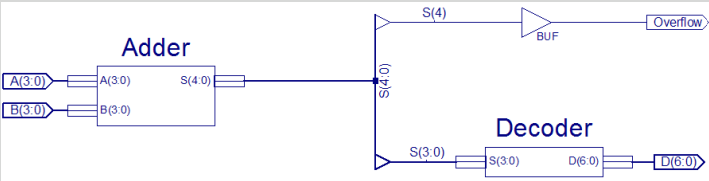
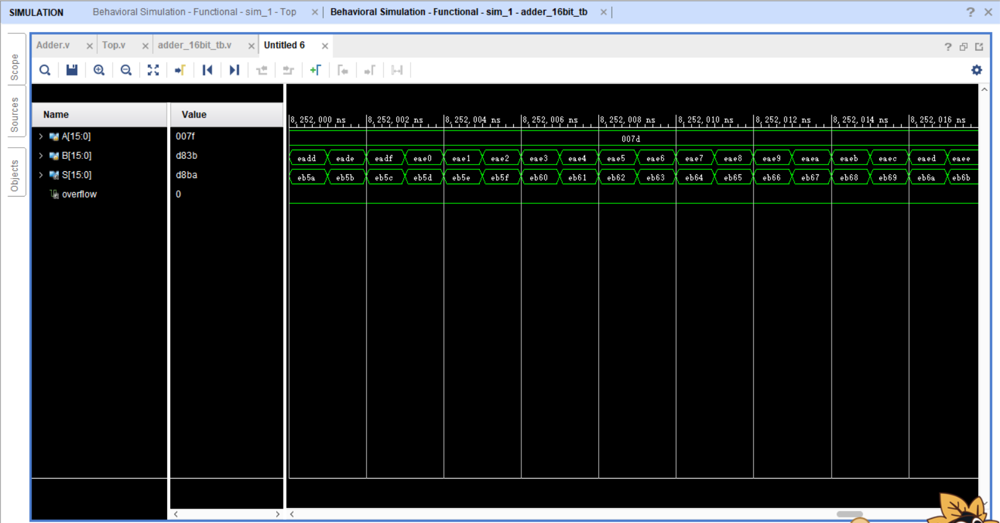
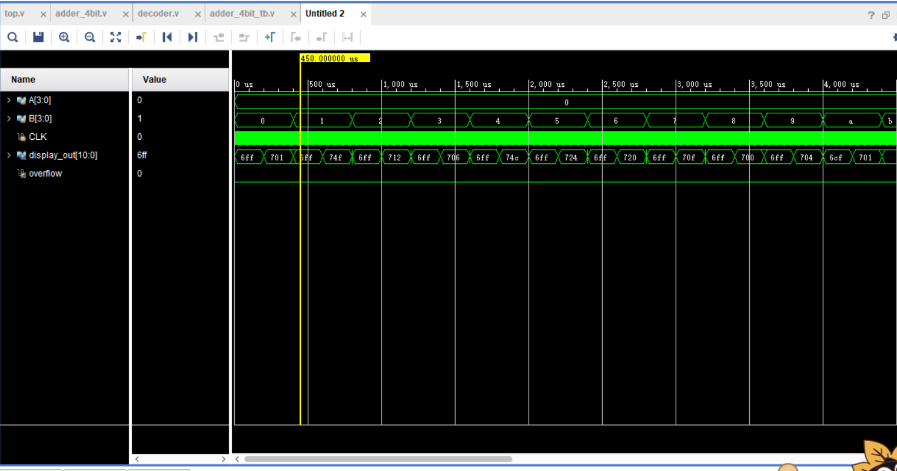
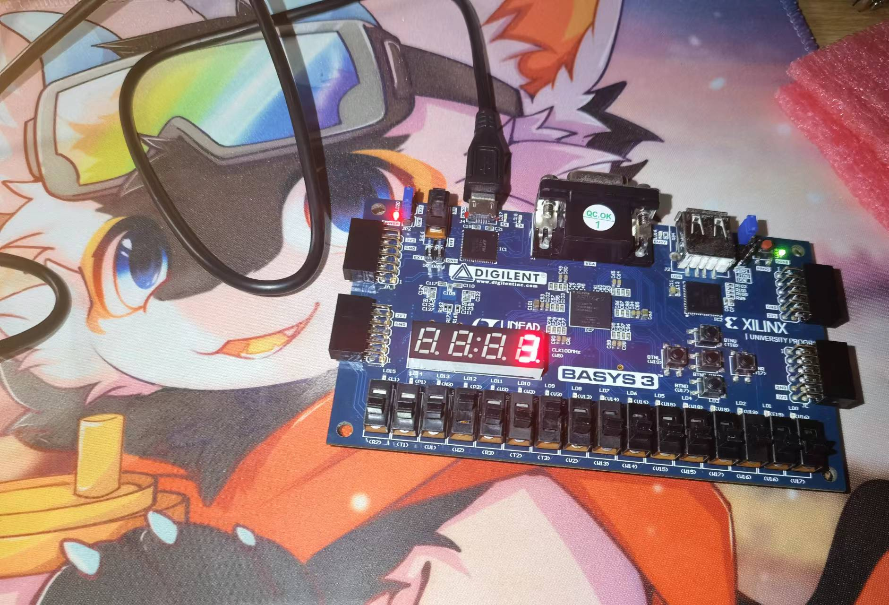

第一次实验报告——加法器
实验内容
- 设计一个四位加法器，完成仿真和烧录
- 设计一个十六位加法器，完成仿真
实验过程
四位加法器
设计
根据下图的硬件架构，分别设计了两个子模块：adder_4bit和decoder

adder_4bit源代码如下：
module adder_4bit(
input [3:0] A,
input [3:0] B,
output [4:0] S
);
assign S = A + B;
endmodule
decoder源代码如下：
module decoder(
input CLK,
input [3:0] S,
output reg[10:0] D
);
reg sel = 0;
integer count = 0;
parameter FPS = 1000;
always @(posedge CLK) begin
if(sel) begin
case(S)
0,10: D <= 11'b1110_0000001;
1,11: D <= 11'b1110_1001111;
2,12: D <= 11'b1110_0010010;
3,13: D <= 11'b1110_0000110;
4,14: D <= 11'b1110_1001100;
5,15: D <= 11'b1110_0100100;
6: D <= 11'b1110_0100000;
7: D <= 11'b1110_0001111;
8: D <= 11'b1110_0000000;
9: D <= 11'b1110_0000100;
default: D <= 11'b1110_1111111;
endcase
end else begin
case(S)
10,11,12,13,14,15: D <= 11'b1101_1001111;
default: D <= 11'b1101_1111111;
endcase
end
if(count == 100_000_000 / FPS) begin
count <= 0;
sel = !sel;
end else
count <= count + 1;
end
endmodule
接着使用top模块完成四位加法器的组装
module top(
input CLK,
input [3:0] A,
input [3:0] B,
output overflow,
output [10:0] display_out
);
wire[4:0] S;
adder_4bit add(.A(A), .B(B), .S(S));
decoder dec(.CLK(CLK), .S(S[3:0]), .D(display_out));
assign overflow = S[4];
endmodule
仿真
依次遍历A和B，仿真代码如下：
module adder_4bit_tb;
reg[3:0] A;
reg[3:0] B;
reg CLK = 0;
wire[10:0] display_out;
wire overflow;
top uu(.CLK(CLK), .A(A), .B(B), .display_out(display_out), .overflow(overflow));
always @* begin
# 1
if(CLK == 0)
CLK <= 1;
else
CLK <= 0;
end
initial begin
A = 0;
repeat(16) begin
B = 0;
repeat(16) begin
# 1000000
B = B + 1;
end
A = A + 1;
end
$finish;
end
endmodule
部分仿真结果如下： 
运行
运行结果如下： 
十六位加法器
仿照四位加法器的样板，很容易设计得到十六位加法器，源代码如下：
Adder.v
module Adder(
input [15:0] A,
input [15:0] B,
output [16:0] S
);
assign S = A + B;
endmodule
Top.v
module Top(
input [15:0] A,
input [15:0] B,
output [15:0] S,
output overflow
);
Adder adder(
.A(A),
.B(B),
.S({overflow, S})
);
endmodule
Adder_16bit_tb.v
module adder_16bit_tb;
reg[15:0] A;
reg[15:0] B;
wire[15:0] S;
wire overflow;
Top unit(
.A(A),
.B(B),
.S(S),
.overflow(overflow)
);
initial begin
A = 0;
B = 0;
repeat(65535) begin
B = 0;
repeat(65535) begin
# 1
B = B + 1;
end
A = A + 1;
end
$finish;
end
endmodule
仿真结果： 
实验结果分析
四位加法器：经测试，加法功能正常，溢出也能正常显示。但溢出时译码器也会显示低四位对应数，这可以通过在top模块的display_out输出前添加对S[4]的判断来阻止数码管在溢出时的显示。
十六位加法器：由于所有样例测试耗时过长，仅截取部分结果测试；溢出部分独立测试。结果正常。
实验总结
设计时遇到的问题及吸取到的经验：
- 模块名开头不能为数字，如
4bit_adder是非法的，以后应该遵循一定的命名规范。 - 错将寄存器位宽写成数组，如
reg[6:0] D写成reg D[6:0] - 忘记了七段译码器工作原理。七段数码管针脚定义从a到b是从顶部顺时针直到中心；七段译码器输入BCD码，输出七段码。
- 错将
top模块的S写成输入，会报电平冲突错误。 - 没有写实例名。
仿真过程可以写在一个initial块内，用串行思路依次写出测试逻辑，最后用$finish;终止仿真